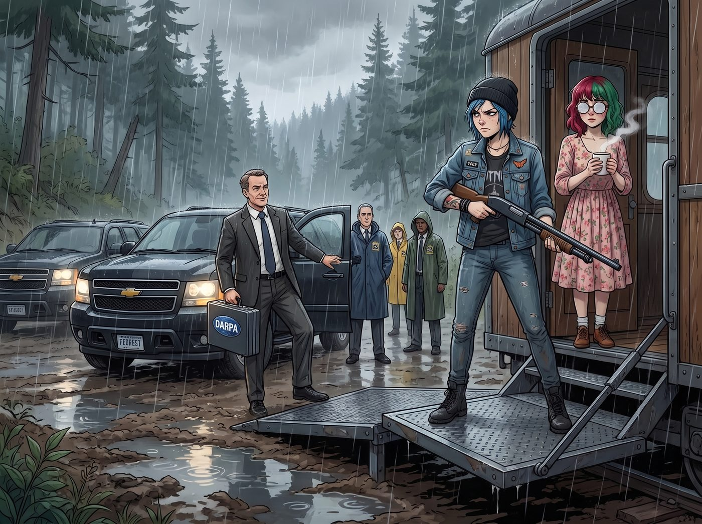

獵人的偽裝

奧林匹亞半島的雨季從來不講道理。
當三輛掛著聯邦政府車牌的黑色休旅車碾過泥濘的伐木道，停在二號車廂前時，國防部高級研究計畫局的首席研究員 Thorne 博士覺得自己這次終於贏了。
他推開車門，手裡緊緊攥著一個帶有官方封條的公文包。在他身後，除了幾位隨行人員，還有幾位穿著防雨風衣的能源部官員。
車廂的升降甲板緩緩降下，Chloe 扛著一把霰彈槍，一臉不爽地站在門口。而 Lily 則捧著一杯 Kate 剛泡好的熱可可，乖巧地站在 Chloe 身後，圓框眼鏡上蒙著一層淡淡的水氣。
一、被按住的槍管
「Lily 小姐，很遺憾地通知妳，時代變了。」Thorne 博士將兩份帶著官方徽章的文件拍在露營桌上，嘴角抑制不住地上揚：「這是能源部長和國防部長的聯合簽署令。基於當前緊張的地緣政治局勢，白宮昨晚發布了緊急行政命令，全面下調了多元文化與邊緣藝術相關項目的戰略優先級。妳之前用來申請豁免權的那些補貼名目，已經無法為這台反應爐提供法理保護了。」
他頓了頓：「我們今天就要把反應爐帶走。」
Chloe 眼神一冷，大拇指下意識地扣向了霰彈槍的保險。
「Chloe 學姐，請不要對聯邦公文進行任何暴力回應。」Lily 伸出一隻蒼白的小手，輕輕按下了 Chloe 的槍管，力道不大，卻不容拒絕。
Chloe 哼了一聲，把槍扛回肩上，不情不願地退後了半步。
Lily 上前一步，拿起那份聯合簽署令，一目十行地掃過那些複雜的法律條文。
「非常嚴謹的資源優先級調整令，Thorne 博士。無懈可擊。」Lily 抬起頭，露出一個純潔無暇的微笑，「我完全配合這次移交。」
二、堵死的軍規幻想
Thorne 博士的公事包已經在桌上攤開，準備進行正式的交接文書作業。特工們開始有條不紊地拆卸反應爐，動作井然有序，沒有絲毫的緊張氣氛。
「等等，」Chloe 忽然開口，語氣裡帶著一絲半開玩笑的試探，「既然要拿走反應爐，你們總得補償點什麼吧？有沒有那種……軍規等級的發電設備可以換？聽起來比較帥。」
Thorne 博士抬起頭，扶了扶被雨水打濕的眼鏡，語氣裡帶著一絲公事公辦的無奈：「Price 小姐，我必須澄清一件事——不管我們有沒有這類設備，貴車廂在這次優先級調整之後，安全等級認證也一併被下修了。換句話說，就算軍規設備真的存在，妳們現在也沒有資格申請取得。」
Chloe 撇了撇嘴，識趣地閉上了嘴巴。
「所以，」博士繼續說道，語氣恢復了官方的平穩，「作為補償方案，能源部已經協調當地電力公司，從十公里外拉了一條標準供電專線進這片區域。此外，為了確保接下來的電力穩定過渡，我們會在這裡部署一批次世代商用太陽能實驗板，這裡的光照條件和濕度環境，正好符合我們需要的長期戶外測試場地要求。妳們獲得免費的市電併網服務，而我們——」
Thorne 博士看向 Lily：「我們每個月會派技術團隊來這裡上機一次，進行維護並提取測試數據。」
「公平的交易。」Lily 乖巧地伸出手，「合作愉快，博士。」
三、不良資產剝離
看著特工們滿頭大汗地拆卸反應爐，又在泥濘中架好那排低調卻紮實的深藍色太陽能板，Max 湊到 Lily 身邊，小聲問道：「妳就這麼讓他們把反應爐拿走了？這不像妳的作風啊。」
Lily 輕輕抿了一口熱可可，推了推眼鏡：「Max 學姐，那台反應爐的冷卻循環系統在上週已經出現了輕微的金屬疲勞。與其我們自己承擔高昂的維修成本，不如讓對方免費幫我們處理掉，順便還白嫖了一條市電專線和一批性能不錯的太陽能板。這叫不良資產剝離。」
Max 愣了一下：「那他們每個月來拿數據……」
「哦，那個啊。」Lily 的笑容突然變得有些深不可測，「那將會是我們車廂未來最穩定的現金牛。」
一個月後。
狂風暴雨席捲了奧林匹亞半島。Thorne 博士帶著三名苦命的研究員，在泥濘中跋涉了兩公里，凍得嘴唇發紫，終於來到了二號車廂前。
他們在暴雨中接上傳輸線，花了兩個小時下載太陽能板的數據，凍得幾乎失去知覺。
四、42,500美元的帳單
就在他們準備離開時，車廂的門開了。Kate 端著一個托盤，上面放著四杯熱騰騰的現磨咖啡和剛烤好的肉桂捲，溫柔地說道：「各位長官，外面太冷了，請用些熱飲暖暖身子吧。」
對於這些在風雨中凍成狗的研究員來說，這簡直是天使的恩賜。Thorne 博士感激涕零地接過咖啡，喝了一大口。
就在這時，Lily 穿著毛茸茸的兔子拖鞋，拿著一台平板電腦走了出來。「Thorne 博士，數據採集還順利嗎？」
「非……非常順利……」博士凍得打著冷顫。
「那就好。既然您已經享用了我們的極端環境高階人員後勤保障補給，麻煩您在這裡簽個字。」Lily 將平板遞了過去。
博士愣了一下：「什麼補給？」
Lily 推了推眼鏡，螢幕的微光照亮了她那張毫無破綻的臉：「根據聯邦採購法規相關條款，當公務人員在私人產權領地內執行公務時，場地所有者有權提供必要的生存保障服務並依法計費。您剛才飲用的咖啡和肉桂捲，已經正式被列入戰略後勤承包項目。一杯咖啡的核定報銷額度是八百五十美元，肉桂捲是一千兩百美元。加上設備長期佔用私人藝術展區的地租、數據傳輸過程中的本地基站磨損費，以及 Victoria 學姐因為看到你們制服款式老舊而產生的精神審美創傷補償金……」
Lily 甜美地笑著，調出一張長長的帳單：「這個月的帳單總計是：四萬兩千五百美元。請放心，我已經按照標準報銷格式開具了發票，您只需簽字，財務部會自動從你們的專項測試資金裡扣除。」
Thorne 博士看著手裡那杯突然變得重若千鈞的咖啡，差點一口老血噴出來。「妳……妳這是敲詐！一杯咖啡八百五十美金？！」
「這不是普通的咖啡，博士。這是經過妥善調配、由具備良好背景的人員親手準備的戰術級提神液體。」Lily 軟糯的聲音裡沒有一絲情感波動，「如果您拒絕簽字，我將不得不向監察機構舉報您在測試期間非法侵佔邊緣弱勢群體的生存物資。我想，現在的政治局勢，應該不允許一樁公務人員欺壓平民的公關危機出現吧？」
五、心甘情願的提款機
博士的手抖得像風中的落葉。他看著身後那幾個正狂吃肉桂捲、感動得快哭出來的年輕研究員，又看了看 Lily 那雙深不見底的眼睛。
他終於意識到了一個可怕的事實。把反應爐帶走，根本不是什麼勝利。他只是把一個一次性的麻煩，變成了一個每個月都要按時來送錢的長期外包合約。
博士屈辱地在平板上簽下了名字。
看著科學家們落荒而逃的背影，車廂裡的 Chloe 吹了個響亮的口哨，轉頭看向正在算帳的 Lily：「實習生，妳確定這幫傢伙下個月還敢來？」
「他們必須來。」Lily 乖巧地把平板收好，端起自己的熱牛奶，「合規流程是死板的。測試項目一旦啟動，未滿週期不可終止，否則博士就會面臨瀆職指控。只要他們還需要那些太陽能數據，他們就必須每個月來這裡，心甘情願地喝下我們八百五十美元一杯的咖啡。」
她推了推圓框眼鏡，轉頭看向窗外那些正在雨中安靜運轉、為整個車廂提供源源不絕免費電力的太陽能板。
「畢竟，在行政黑魔法的領域裡……」Lily 露出了一個純潔而致命的微笑，「最頂級的獵人，往往是以獵物的姿態出現的。」